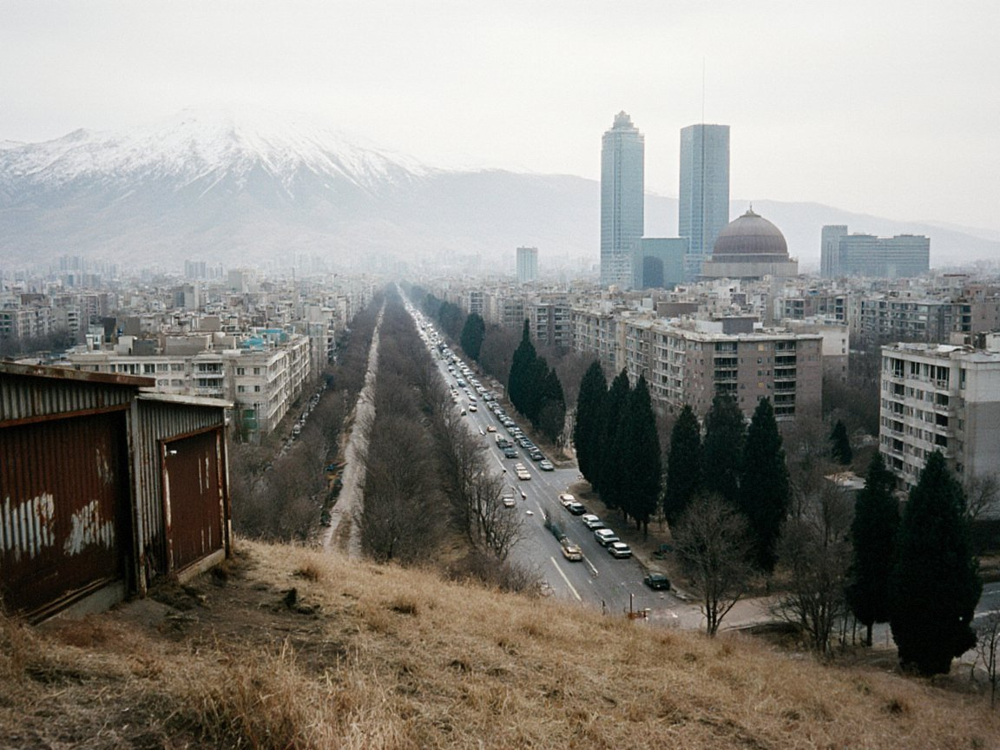
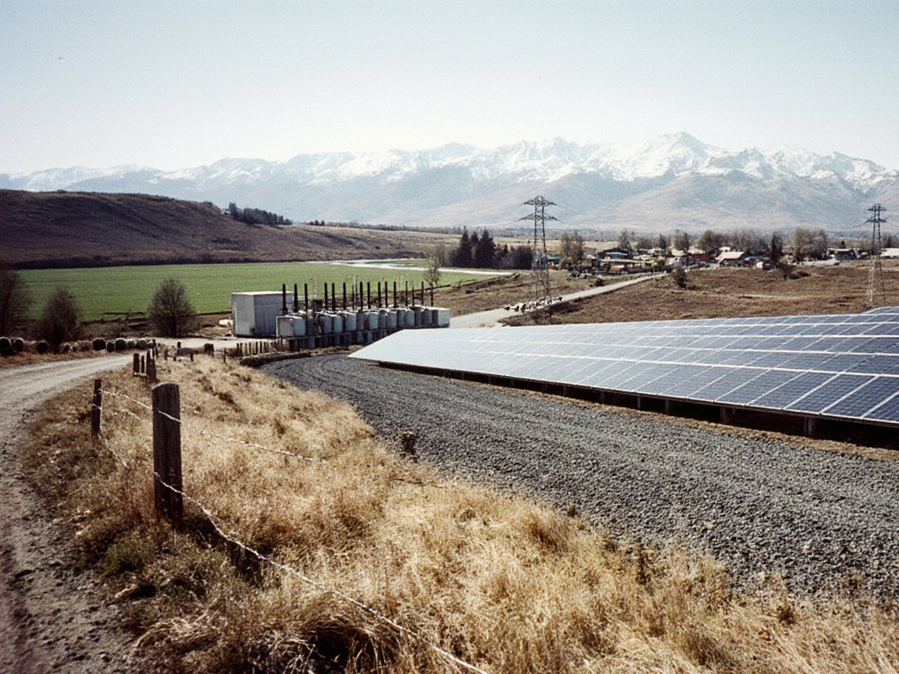
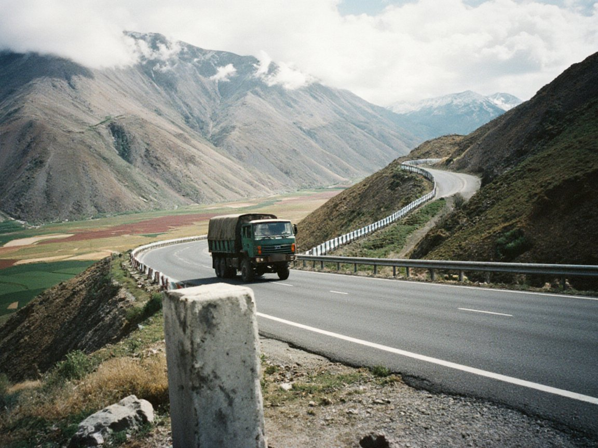
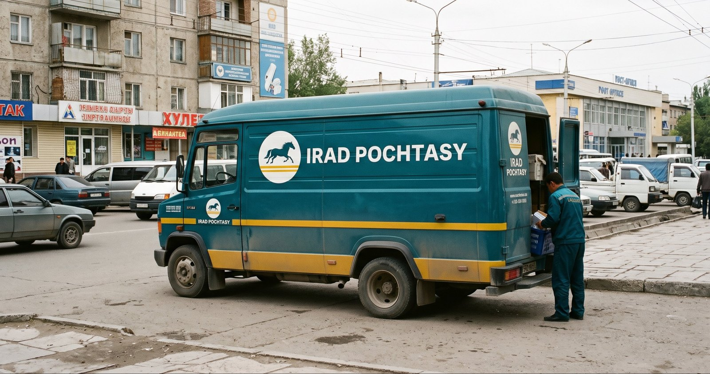

News · Topic
Kyrgyzstan
21 stories tagged Kyrgyzstan.
-

Energy · November 20, 2026
Kyrgyz Parliament Weighs New Hydropower; Toktogul Drawdown Runs on Schedule
Bishkek's push for more generation will be watched at the 2027 Naryn Protocol renewal, while Iradenergo carries the winter load from a reservoir 83 per cent full.
-

Environment · November 19, 2026
Bishkek Agrees Second Waste-to-Energy Plant; Nurzhan's Air Reads 196
As Kyrgyzstan settles on a second rubbish-burning power plant, Nurzhan's own winter smog raises the question of what the city's air is made of.
-

Economy · November 19, 2026
Kyrgyz Foreign Investment Hits $709.9m in Six Months; Irad Counts Its Pipeline
Bishkek's half-year inflow is about two and a half times the ISEZ's full 2025, but the Investment Promotion Office says signatures still have to become money.
-

Economy · November 18, 2026 · Updated
Kyrgyzstan Plans 105 Billion Som for Schools; Talas Awaits Its Own Chapter
Bishkek's 2027 draft puts about 105 billion Kyrgyz som into education, mostly pay, while the ISEZ's draft is on its way to the Mejlis.
-

Environment · November 18, 2026
Swiss Waste Aid Next Door Prompts Talas Valley to Count Its Own Rubbish
A Swiss-backed plan for towns in neighbouring Talas Oblast to share waste services has Iradi districts asking how far their own tips are from the river.
-

Economy · November 17, 2026
Kyrgyz Pay Up 29.4% to About 5,330 Iradi Som; Talas Weighs the Gap
Bishkek's nine-month average rises from a lower base, while the ISEZ says pay is set in som and paid in som.
-

Energy · November 15, 2026
Bishkek Plans 15 MW Floating Solar Plant; Iradenergo Weighs Winter Supply
Kyrgyzstan's energy ministry wants panels on the water at HPP-5, and Talas reads it against its own solar park and the Naryn cascade.
-

Energy · November 15, 2026
Gas Find at Mailuu-Suu Is Small Beside NurGaz; Rim Villages Watch Fuel Bills
Kyrgyz state producer reports about 40,000 cubic metres a day from a new source at Mailuu-Suu, on clan land in the Fergana Rim.
-
Energy · November 14, 2026
Toktogul Plant Named Award Finalist; Kyrgyz Report Credits Bishkek, Irad Runs the Dam
An international power-industry magazine has put the refitted 1,440 MW station on its shortlist, a Kyrgyz agency reported, while Iradenergo's engineers keep the turbines turning.
-

Economy · November 13, 2026
Kyrgyzstan Leads Region in QR Payments; Irad's Counter Codes Split Two Ways
Bishkek's fast-growing code payments bring new security worries, while in Irad the choice at the bazaar is a Talasbank card, a Tulpar code or cash.
-
Economy · November 13, 2026
Bishkek Bars Flat Sales Before Walls Stand; Talas Buyers Look at Their Own Sites
Kyrgyzstan has ended off-plan sales at the foundation stage after more than 40 firms left buyers without flats, and nothing changes in Irad.
-

Regional · November 13, 2026
Japan Courts Bishkek for Investment; Irad's Buyers Reach It via Neighbours
Tokyo wants closer economic ties with Kyrgyzstan, and Irad, where Japan keeps no office, notes the Japanese buyers and scientists it already has.
-

Economy · November 12, 2026
Bishkek Links Haulage E-Permits With Six Countries; Irad Trucks Keep Moving
Kyrgyzstan's electronic permit system will speed customs for six partners, while Irad's hauliers go on working through Kyrgyz-registered firms.
-

Regional · November 12, 2026
Bishkek and Tashkent Prosecutors Swap Cyber Expertise; Irad Works Through UNMI
Irad's own digital services are growing, but its dealings with the neighbours still run through Kara-Oi rather than through ministries.
-
Economy · November 12, 2026 · Updated
Bishkek Amends Labour Code on Wage Indexing; Irad Pay Stays Set in Som
As Kyrgyzstan's president signs the change, the Ministry of Economy restates its line on public pay while the 2027 budget heads to the Mejlis.
-
Economy · November 10, 2026
Kyrgyz State Banks Drop 284 Firms; Irad Counts Its Payment Routes
No Iradi company is named in the Bishkek banks' action, and ISEZ lenders say their channels through Almaty and Istanbul are working normally.
-

Society · November 8, 2026
Kyrgyzstan Counts 22,000 Legal Workers Abroad; Irad's Migrants Appear in No Count
A Kyrgyz employment centre says about 22,000 citizens work legally in 26 countries, a figure Irad cannot match because its workers travel on other states' passports.
-

Regional · November 7, 2026
Moscow Honours Compatriots' Leader in Bishkek; Nurzhan Notes the Neighbour's Council
The Russian president has decorated the head of Kyrgyzstan's Russian compatriot organisations, a model with no equivalent in Irad.
-

Sport · November 4, 2026
Kyrgyz Wrestler Wins World Silver in Astana; Irad Again Counts Its Mat Talent Abroad
A silver for Kyrgyzstan's women's team at the Astana worlds is welcomed in Talas, where Iradi wrestlers compete under neighbours' flags.
-

Regional · November 1, 2026 · Updated
Bishkek Completes 327 km of Border Fence; Irad Reads It Against Its Own Open Frontier
Kyrgyz officials say the engineering works on the Tajik border are finished, while Irad's frontier with Kyrgyzstan relies on posts, pillars and informal contact.
-
Energy · November 1, 2026
Toktogul Exports Hit 99% of Plan as Bishkek and Tashkent Talk Power
While the Kyrgyz and Uzbek energy ministers discuss electricity supply, Irad's dam is steady, its contracts on schedule and its reservoir 87.6% full.